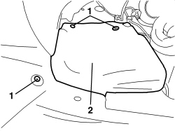

7055B65 ENGINE COMPARTMENT DUST COVER IN LEFT FRONT WHEEL ARCH - R.R.
- Path
- Procedures > 70 FITTINGS > 7055 MOULDINGS AND PROTECTION > 7055B EXTERIOR PROTECTIONS > 7055B65 ENGINE COMPARTMENT DUST COVER IN LEFT FRONT WHEEL ARCH - R.R.
- Kind
- repair procedure (removal / refitting; the operation number is the code)
- Applies to
- all engines; all production periods
- Interactive page
- https://sloeber94.github.io/elrnDB/#/939004937
Applies to: all engines; all production periods
 Removing
Removing
 Refitting
Refitting- Position the vehicle on a lift.
- Raise the vehicle.
1. Undo the bolts fixing the dust cover.
2. Remove the dust cover releasing it from the additional wheel arch liner and from the lower engine compartment lining.

Applies to: all engines; all production periods
Refitting
Removing- Check that the dust protection is not damaged.
- Position the dust cover attaching it to additional wheel arch liner and the lower engine compartment lining.
- Tighten the bolts fixing the dust cover.
- Remove the vehicle from the lift.